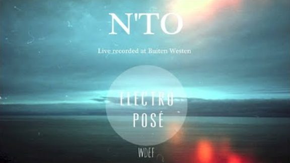
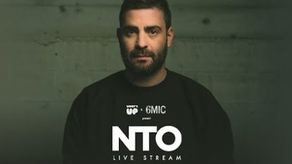

14
Full sets
16h
Of music
9.4M
Total views
2013–26
On YouTube
05
Countries
French producer and co-founder of the Hungry Music label with Worakls and Joachim Pastor. Every show is played live on synths and controllers, building emotive, melodic techno in real time. His 2017 sunset set on top of the Tour Saint-Jacques for Cercle is one of the best-known live sets in the genre.
Latest uploads
(03) · 2026

Most watched
01
 N'to live @ Tour Saint-Jacques, for Cercle
Paris · 2017 · 1:25:40
Views4.4M
02
N'to live @ Tour Saint-Jacques, for Cercle
Paris · 2017 · 1:25:40
Views4.4M
02
 NTO Live @ Région Dents du Midi
Swiss Alps · 2020 · 1:34:36
Views1.8M
03
NTO Live @ Région Dents du Midi
Swiss Alps · 2020 · 1:34:36
Views1.8M
03
 Sinners (N'to & Joachim Pastor) @ Concorde, for Cercle
Paris · 2017 · 1:16:19
Views709K
05
Sinners (N'to & Joachim Pastor) @ Concorde, for Cercle
Paris · 2017 · 1:16:19
Views709K
05
N'to live @ Tour Saint-Jacques, for Cercle
Paris · 2017 · 1:25:40
Views4.4M
02
NTO Live @ Région Dents du Midi
Swiss Alps · 2020 · 1:34:36
Views1.8M
03

Electro Posé Mixtape × N'to (Live) The Hague · 2014 · 58:12 Views1.1M 04
Sinners (N'to & Joachim Pastor) @ Concorde, for Cercle
Paris · 2017 · 1:16:19
Views709K
05

NTO live @ 6MIC × Wup Events Aix-en-Provence · 2021 · 50:01 Views446KEvery set
(14) · 2013–2026
2026
NTO | HÖR × Sennheiser Amsterdam Livingroom
Amsterdam, Netherlands
56:46
11K
2026
NTO Live (Full set) — Spectra, Liège
Spectra Festival, Belgium
2:03:36
67K
2026
NTO Live (Full set) — komm schon Alter, Das Festival
Germany
1:20:18
114K
2024
NTO & Sofiane Pamart — Forever Friends (Live session)
Live session
40:42
418K
2024
N'to — DGTL Festival 2014 (archive upload)
Amsterdam, Netherlands
1:03:20
12K
2021
NTO live @ 6MIC × Wup Events
Aix-en-Provence, France
50:01
446K
2021
Brut.club: NTO live set at Le Baou
Marseille, France
1:04:18
76K
2020
N'to — Lockdown Tour, Part 3 (Bathroom)
At home
49:41
17K
2020
NTO Livestream, with special guest MEUTE
Livestream
36:45
92K
2020
NTO Live @ Région Dents du Midi
Valais, Switzerland
1:34:36
1.8M
2017
N'to live @ Tour Saint-Jacques, for Cercle
Paris, France
1:25:40
4.4M
2017
Sinners (N'to & Joachim Pastor) launch @ Concorde, for Cercle
Paris, France
1:16:19
709K
2014
Electro Posé Mixtape × N'to (Live)
The Hague, Netherlands
58:12
1.1M
2013
N'to — Live @ Twenty Five
Club
1:04:56
145K